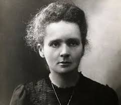

Marie Curie
Inicio
Bibliografia
Aportes
Premios
Marie Poniatowska

Nombre real:
Maria Salomea Skłodowska-Curie
Fecha de nacimiento:
7 de noviembre de 1867
Lugar de nacimiento:
Varsovia, Zarato de Polonia
Ocupación:
Fisica